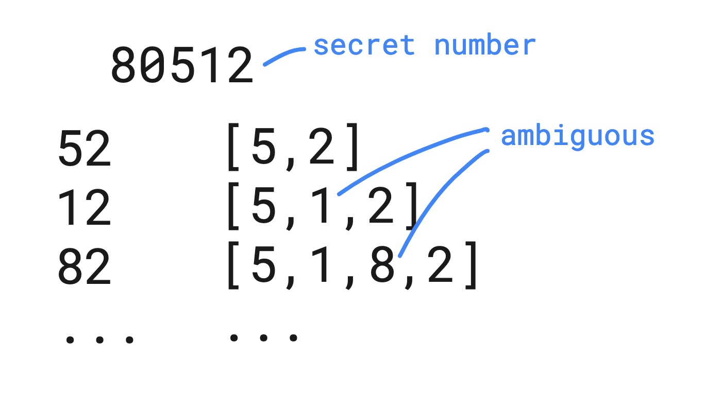

The technical skills of computer programming fall under two broad categories, in my opinion.
Things like learning language syntax, constructs, and patterns fall into one category. I would summarize it as the ability to connect and utilize the myriad, "tools of the trade" -- languages, frameworks, APIs, libraries -- to create software. There's usually tutorials for these things.
The second category includes things that are a little bit harder to put your finger on, but can probably be best described as problem solving. It's the ability to analyze, troubleshoot, debug, or solve a problem. It's the ability to reason with abstract ideas and turn them into code.
There is for sure some overlap between these two categories, but this is how I like to categorize them.
I think problems like the one I am about to share are great tools for learning about problem solving. This one's from Project Euler. My intention is not to spoil the answer. I want to share my process of figuring it out, with the hope of being able to pinpoint some specific strategies that can be used to solve all kinds of problems.
The challenge
You can find the original problem statement here. The goal is to figure out what the secret number is. You are given a list of numbers as clues. Think of the list of numbers like the output of a keylogger as a user types their passcode.
Another clue is that the user is prompted to enter three of the digits from their passcode each time they log in, and that these digits are asked for in order. So, you don't know exactly which digits they asked for, but you can be sure that the first digit would appear before the second, and the second before the third.
...
160
689
716
731
736
...
So, the challenge is to determine what the shortest possible secret number is.
First steps
I started out by simply writing down some numbers with pencil and paper. Writing things down helps me begin to think about the problem.
One of the first thoughts that I had was that maybe the length of the secret number was directly related to the length of the list of numbers. For example, if I was given four three-digit numbers, does that mean that the length of the secret number is four?
I realized pretty quickly that the answer is no, but this question helped me to try and simplify the problem. You've got to start somewhere…
What if you were given a list of two-digit numbers, or even a list of just one-digit numbers? What could that tell you about the length of the secret number? Is there something special about three-digit numbers in particular?
I made a list of one-digit numbers and tried to think about how I might be able to solve the same problem with that instead.
6
2
1
0
Given a list like this as clues, I could say for certain that the secret number has at least a 6,2,1, and 0, but I also loose essential information about the problem: The order that the numbers appear in. A one-digit list is too ambiguous. The secret number could be 6210, 2601, or any other combination, and I would have no way of knowing which one is correct.
If I made a list of two-digit numbers instead, that may be simpler to work with, yet still able to convey the information needed. From this point forward, I decided to think about the list as two-digit numbers, rather than three-digit numbers.
Possible option: Maintain a sorted array
At this point, I still wasn't sure how to solve the problem on paper, so I decided to try and work backwards. I wrote down a random number and then picked a few pairs of digits from it to try and reconstruct my own version of the problem. I decided to go through each number in the list and write down the digits as if they were being inserted into some kind of array.

I realized an approach like this would not be very practical because it still leaves room for ambiguity.
In the example above, its clear that 5 is before 2, but if I continue to add the digits from the next number, I can't tell if the 1 should come before or after the 5. It's the same problem for the 8: I know it should come before the 2, but the data says nothing about if it should be before or after the 1, or the 5.
Even if I had another data point to disambiguate the clues -- 51, for example -- sure, it would tell me that the 1 is in the correct spot between 5 and 2, but I already get the feeling that trying to write code to account for switching numbers around in an array is not going to be practical, and that there is probably an easier way.
Writing it out this way helped me realize that the help of some sort of data structure would be useful for solving this problem.
So now the question is, what kind of data structure could help model this problem?. To help with this decision, I thought about what data is actually provided in the problem. I am given the numbers, of course, and I'm also given a list of rules about how the digits should fit together. Using the example above, the list of numbers reads as:
- 5 "comes before" 2
- 1 "comes before" 1
- 8 "comes before" 2
A directed graph seems to be a pretty natural fit to represent this information. Each node could be a digit, and the edges between nodes could represent the relationship between them.
I felt good about using a graph to solve the problem, but there were still some questions that I had to figure out.
- How would I know when the graph has enough information to to be able to get the secret number? In other words, how can I know when my answer is conclusive?
- How could the graph be read or interpreted programmatically to produce the secret number?
- What if a secret number had more than one of the same digit? Would that ruin my approach?
How to know when the answer is conclusive
To help answer this question I used the same technique of creating a simplified version of the problem and working backwards. Pretend now that 157 is the secret number. How many edges between the nodes would it take to definitively say that 1 comes before both 5 and 7, and 5 comes before 7? The answer is three edges for this particular graph.
In this example, the order is known when number of edges are equal to the number of nodes. Is it that simple? Can we know what the secret number is if the number of edges are equal to the number of nodes?
In this example, yes, but it doesn't hold true for the general case. By creating more examples, I start to find a relationship between the number of nodes, and the number of edges. Have a look at what four and five-digit secret numbers look like as a graph:

After drawing a few of these, I could begin to see a pattern emerge. As the number of nodes increase, the number of edges increase like, 1, 3, 6, 10, 15, 21, 28, ...
It can be helpful to look for patterns, because it means that there's an equation which can be used to represent some aspect of the problem. Here the pattern showed me what condition to use in order to know when my answer could be considered conclusive. This is the equation that represents that pattern, where n is the number of nodes in the graph.
Reading the graph to find the answer
A hand-drawn graph helps to visualize the approach of solving this problem, but I knew that I would also need to keep in mind how the graph could be represented with code. Specifically, how to programmatically traverse the graph to produce a result.
After staring at the examples for a bit longer, I realized an obvious and helpful property about the graph.
The nodes with the most outward edges come before those with less outward edges. Additionally, the number of edges for each node differ by exactly one. This means that the first digit of the secret number should have the most outward edges, while the last digit would not have any outward edges.
This property made logical sense to me, and was something that could be easily translated into code.
Duplicate digits
A secret number with more than one of the same digit could cause problems with my approach. This was something that worried me as I was working, because it was not clear how to know which two nodes to put the edge between. For example, take a look at 1030 as the secret number, and imagine the digits given in the following order:
There are multiple ways to draw the graph because there are two 0's. There should still be only one "correct" way. Creating a correct graph might depend on the order in which the digits are given. I might need to think of some way to backtrack and re-connect nodes in order to end up with the correct graph.
The correct and incorrect graphs can be compared to understand how exactly they differ. The incorrect graph has a circular dependency: 3 comes before both the orange and blue 0's, but then the blue zero comes before 3, which is contradictory.
Another difference is that the correct version is the only one that satisfies the property mentioned above, where the number of each node's edges differ by exactly one. This property should always be true for any secret number modeled with the graph.
At this point, I decided to put the question of duplicate digits on hold. It looked like this would break the approach that I had planned to use. I think its possible to figure out, but it was unclear if this use case needed to be supported at all.
My plan was now to turn my ideas into code to see if it would produce the correct answer.
Translate ideas to code
This part went by pretty quickly because I had formed a good understanding of the problem, as well as an approach for how to solve it. I picked Python for no particular reason, other than I thought it would be fun to use a language that I hadn't used in a while.
I'm not going explain the code in too much detail, but I want to express the thought process I had while writing it.
My idea was to loop over each number in the list to build up the graph. Up until now, the graph had only been represented visually on paper with circles and arrows. The task is now to represent the graph using code.
There's at least a couple ways to implement a graph. What I came up with was closest to what's traditionally known as an adjacency matrix, but with some changes.
keylogs = [
319,
680,
180,
690,
# ...
]
adj_matrix = {}
for digits in keylogs:
a, b, c = str(digits)
adj_matrix[(a,b)] = 1
adj_matrix[(a,c)] = 1
adj_matrix[(b,c)] = 1
Here the graph is represented by a Python dict. Each key in the dict is a tuple of digits from the current number in the list. The values are hard-coded with 1s to indicate that there is an edge between the two digits in the tuple.
The values are less important, so long as there's a key with the two digits to signify an edge. In other words, the edge is indicated by the existance of an entry in the dict.
Notice how the actual problem provides a list of three-digit numbers. Using two-digit numbers was a simplification that I had made to help me think about the problem initially. Three-digit numbers do not fundamentally change the problem, it just provides more data per number. Now instead of only knowing that digit a comes before digit b, I also know that digit a comes before c, and b before c.
The next step is to add a check to see if the graph contains enough information to reveal the secret number. As I had already discovered, the condition can be modeled using the following formula:
for digits in keylogs:
# ...
n_nodes = len(set(
[digit for edge in adj_matrix.keys() for digit in edge]))
n_edges = sum(adj_matrix.values())
is_conclusive = n_nodes > 3 and (
n_nodes * (n_nodes - 1)) / 2 == n_edges
# ...
I found that adding n_nodes > 3 was necessary, otherwise the program would stop after the very first iteration.
Side note: I found that n * (n - 1)) / 2 == e + 1 also produces the correct answer, and in fewer iterations. However, I believe it could leave room for ambiguity in some cases, depending on the order that the numbers are given, so I decided not include it as part of the solution I ended up with.
Once the condition is met, the graph can be traversed to produce the correct answer.
# ...
if is_conclusive:
nodes = [edge[0] for edge in adj_matrix]
counts_by_node = reduce(count_digits, nodes, {})
front_digits = sorted(counts_by_node,
key=counts_by_node.get, reverse=True)
[last_digit] = list(set(
[edge[1] for edge in adj_matrix]).difference(nodes))
result = int(''.join(front_digits) + last_digit)
return result
Using my weird/unique representation of a graph, the nodes with the most outgoing edges can be found by creating a list of only the first element in each tuple. The resulting list will have one or more of each digit from the secret number, and it will be counted and sorted. Here's some print statements to help illustrate what's happening:
print(nodes)
# ['3', '3', '1', '6', '6', '8', '1', '1', '6', '9', '1', '2', '6', '2', '7', '7', '8', '3', '3', '7', '7', '1', '7', '7', '2', '7', '3', '3']
print(counts_by_nodes)
# {'3': 6, '1': 5, '6': 4, '8': 2, '9': 1, '2': 3, '7': 7}
print(front_digits)
# ['7', '3', '1', '6', '2', '8', '9']
The final step before the result is to get the very last digit of the secret number. It's not included in the front_digits list, because the last digit in the secret number has 0 outward edges. It should be the only number that remains in the graph, but not in the list of nodes -- 0 in this case.
And so the secret number is 73162890. Luckily I did not have to worry about duplicate digits to solve this particular problem, so I am glad that I didn't end up spending time on that for nothing.
I'm going to stop here, but the next step would be to look for ways to improve my answer. Now that I have a baseline, I can improve all sorts of things about the program such as its runtime, memory usage, the readability of the code, or work on refactoring to handle special cases (like duplicate digits.)
How to solve a programming problem
There's obviously not only one way to solve this, or any problem in general. I hope that this example has demonstrated at least a few of the techniques that I find useful.
- Start by asking questions and making observations about the problem. Sometimes this step feels like I'm just spinning my wheels, or stating the obvious, but I find that it gives my mind the traction needed to get started.
- Try to make the problem smaller, and solve those ones instead. Look for ways to simplify the information given. This helps me reason about the problem easier, and it can reveal different aspects that I may not have considered otherwise.
- Create lots of examples to experiment with.
- Work backwards if possible. This can provide another angle on the problem.
- Look for patterns and think about how they could be utilized.
- Visualize ideas by writing them down. Pencil and paper is a medium that helps me think clearly.
- Try not to jump straight into the code, sometimes it's OK, but it can also be distracting. I strive to first form a reasonable conceptual model of my approach before implementing it in code. There are times where I do the opposite though.
- Think about edge cases, but don't try to tackle everything at once. It helps to just make a note, and then revisit if necessary.
- It almost goes without saying, but practice/experience makes a big difference. For example, if I had never even heard of a graph data structure, I would not have thought to apply it to this problem. So, make practice and learning part of your daily workflow as much as possible.
I think that problem solving is quite personal. There's never going to be a definitive list for everyone to follow. Our minds are unique, as is the way that we see and solve problems, and that's awesome. While we can definately learn from each other, we should try to come up with our own techniques to reason about the problems that we're given. This was a fun exercise for me -- to solve a problem, but also to analyze what my own version of problem solving invovles.